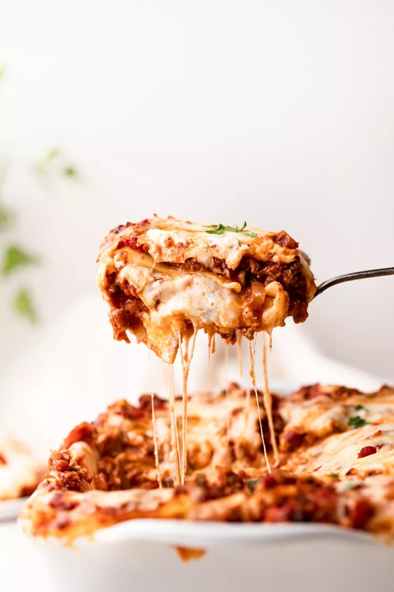

Lasagna

Description
Lasagna itself is one of the oldest types of pasta made of flat sheets. However the term is often used to refer to the lasagna dish - stacked layers of lasagna pasta with fillings such as beef, tomato sauce, vegetables, and cheese, among others.
Lasagna is popular worldwide and is a signature dish of the Italians!. It is also Garfield's favourite food.
Ingredients
For this recipe, we'll be using both beef and pork.
- 1 tbsp olive oil
- 1 onion, diced
- 1 carrot, diced
- 1 celery stalk, diced
- 2 garlic cloves, finely sliced
- 250g beef mince
- 250g pork mince
- 1 tbsp tomato purée
- 400g tin chopped tomatoes
- 200ml beef stock
- 200ml red wine
- 1 tsp Worcestershire sauce
- 9-12 lasagne sheets (depending on the size of your baking dish)
- 50g Parmesan, grated
- 150g pack mozzarella, shredded
Method
- In a large pan, heat the olive oil over a low heat. Fry the onion, carrot, celery and garlic for 5 mins, or until softened. Add the mince and fry on a medium heat until golden. Turn up the heat, pour in the wine and bubble until reduced. Stir in the tomato purée, chopped tomatoes and stock. Add in the Worcestershire sauce and simmer for 15 mins, or until the liquid has reduced. Season.
- Meanwhile, make the white sauce. Melt the butter in a small saucepan over a low heat and add the flour. Whisk until combined and cook on low for 1-2 mins. Remove from the heat and gradually whisk in the milk until you have a loose sauce. Season. Return to a gentle heat and whisk constantly until the sauce thickens.
- Preheat the oven to gas 6, 200°C, fan 180°C. Layer up the lasagne in a baking dish, starting with a third each of the ragu, then the pasta, then the white sauce. Repeat twice. Top with the Parmesan and mozzarella then bake in the oven for 40-45 mins, until piping hot and crisp and bubbling on top. Serve immediately.
- Once the dish has cooled completely, transfer it to an airtight, freezer-safe container, seal and freeze for up to 1-3 months. To serve, defrost thoroughly in the fridge overnight before reheating. Loosely cover with foil and bake until dish is thoroughly heated through. Reheat until piping hot.